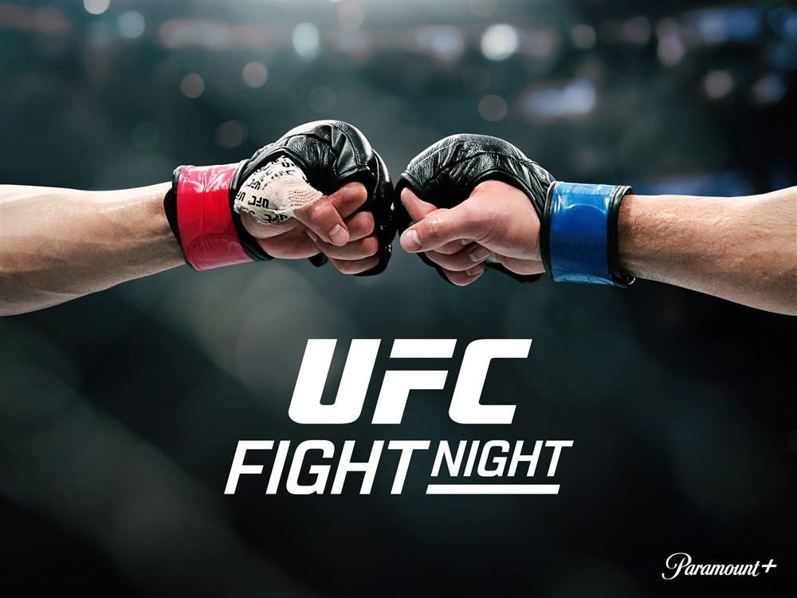
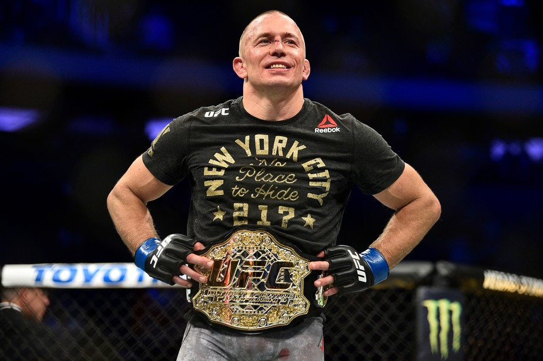
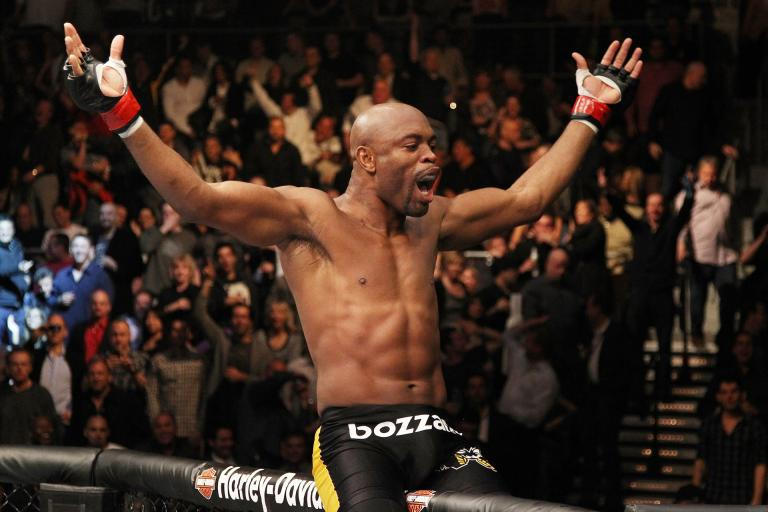
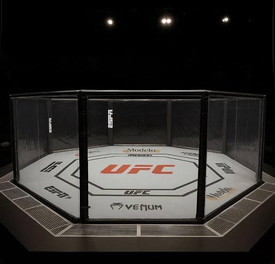

Jon Jones
Jon Jones foi campeão dos meio-pesados e, em 2023, conquistou também o cinturão dos pesados ao vencer Ciryl Gane no UFC 285. Ele é lembrado por usar muito bem o alcance dos braços e o wrestling.
Lendas do Octógono
Bem-vindo ao Lendas do Octógono, um site sobre três nomes que marcaram a história do MMA: Jon Jones, Georges St-Pierre e Anderson Silva.

Escolher os melhores de todos os tempos é uma tarefa difícil, porque cada fã olha para coisas diferentes: número de títulos, tempo no topo, nível dos adversários ou estilo de luta. Por isso, essa classificação é debatível.
Segundo o ranking histórico da Fight Matrix, o primeiro lugar é de Georges St-Pierre, o segundo é de Jon Jones e o terceiro é de José Aldo. Mesmo assim, eu escolhi Jon Jones, Georges St-Pierre e Anderson Silva por causa do impacto que eles tiveram no esporte.
Para muitos, Jon Jones é o maior da história do MMA. Foi campeão dos meio-pesados e também dos pesados. Seu jogo é completo: usa o wrestling, as cotoveladas, o alcance dos braços e muita inteligência de luta.

Georges St-Pierre, o GSP, é um dos lutadores mais técnicos e inteligentes que já passaram pelo UFC. Dominou a categoria dos meio-médios e depois ainda foi campeão dos médios. Seus pontos fortes são o wrestling, a estratégia e a capacidade de se adaptar a cada adversário.

Anderson Silva é um dos maiores representantes do Brasil no esporte. Tem uma das maiores sequências de vitórias e de defesas de cinturão da história do UFC. Ficou conhecido pela precisão, pela criatividade e pela trocação.

Olhando para os três, dá para perceber algumas qualidades que se repetem:

Para conhecer o site com calma, siga estes passos:
Este site foi feito como trabalho escolar para falar de três lutadores que marcaram a história do UFC. Abaixo você encontra um pouco da carreira de cada um.
Jon Jones foi campeão dos meio-pesados e, em 2023, conquistou também o cinturão dos pesados ao vencer Ciryl Gane no UFC 285. Ele é lembrado por usar muito bem o alcance dos braços e o wrestling.
O canadense Georges St-Pierre dominou os meio-médios. Em 2017, ao voltar para o octógono, finalizou Michael Bisping no UFC 217 e conquistou o cinturão dos médios, tornando-se campeão em duas categorias.
O brasileiro Anderson Silva ganhou o cinturão dos médios em 2006, ao vencer Rich Franklin no UFC 64. Depois disso, defendeu o título 10 vezes e ficou famoso pelo estilo criativo na trocação.